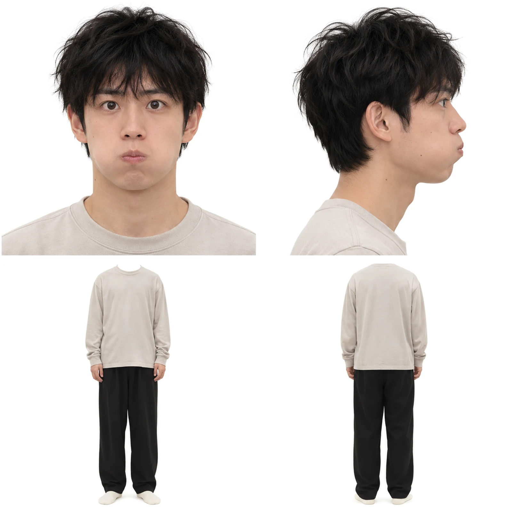

苏打饼干
剧本与分镜
完整剧本与分镜脚本
下载原文带货种草 · 苏打饼干 原片时长 14.60 秒 故事梗概 男生在客厅吃饼干被女生发现，他先表现出慌张，再介绍蓝红两袋并掰开饼干。女生试吃后表情转为惊喜，两人共同展示包装并在片尾继续吃。 人物 米衣女生从发问转为认可，白衣男生从偷吃转为分享。两人都在客厅操作同一桌面。 场景 暖色客厅以藤编茶几、米色沙发、三脚灯形成唯一场地。 道具用途 两款袋装商品用于品牌段；方形饼干用于掰开、咬下及桌面碎屑。 剧本与分镜 按原片抽帧重建的复拍制作稿。画面未能确认的对白、音效与镜头节奏按下表执行。 | 镜号 | 画面内容 | 镜头视角 | 使用资产 | 动作描述 | 台词/旁白 | 音效 | 单镜头时长 | | 01 | 女生靠到茶几边问男生 | 侧面双人中景 | 米衣女生、白衣男生、暖色客厅、两色饼干袋 | 女生向下看，男生停在咀嚼动作 | 女生：你在吃什么？ | 轻嚼、衣声 | 1.60秒 | | 02 | 男生鼓腮，护住蓝袋 | 正面人物近景 | 白衣男生、蓝袋苏打饼干 | 瞪眼看女生，再放低手中包装 | — | 促节拍 | 2.00秒 | | 03 | 男生并举红蓝两袋 | 过肩中景接包装特写 | 白衣男生、红袋苏打饼干、蓝袋苏打饼干 | 双手同时举到胸前 | 男生：尝尝这个。 | 包装脆响 | 1.90秒 | | 04 | 两手掰开方饼 | 饼干近景，人物虚焦作背景 | 方形苏打饼干、米衣女生 | 向两侧掰开，露出断口和碎屑 | — | 咔嚓 | 2.30秒 | | 05 | 女生咬下后睁圆眼睛 | 正面面部近景 | 米衣女生、方形苏打饼干 | 入口后抬眼，停半拍 | — | 清脆咀嚼 | 1.50秒 | | 06 | 二人坐正面共同展示产品 | 茶几对面中景 | 两位主角、两色饼干袋、藤编矮茶几 | 包装居中，女生示意镜头前方 | 女生：这个可以试试。 | 轻快节拍 | 2.70秒 | | 07 | 两人低头继续伸手取食 | 茶几上方近景 | 两位主角、方形苏打饼干、两色饼干袋 | 两只手从不同边缘拿起饼干，咀嚼收尾 | — | 包装声和咬嚼 | 2.60秒 | 时长合计 14.60 秒
制作资产
角色资产 · 4 项
